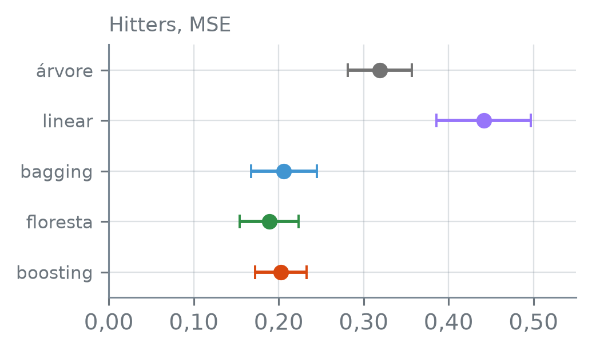
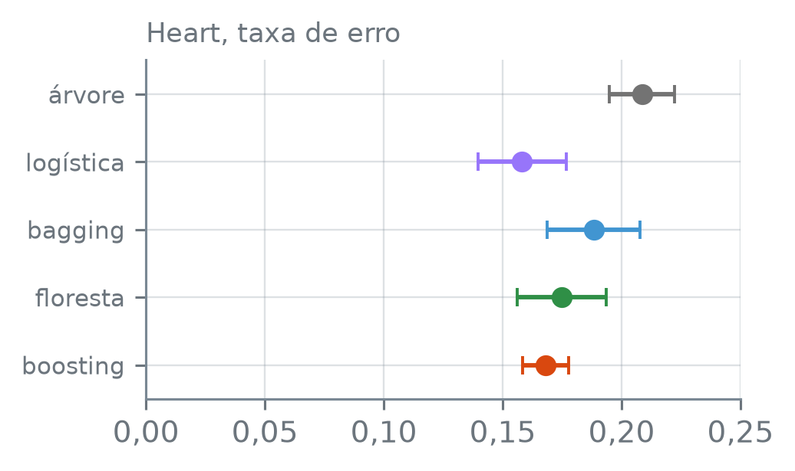

numero_br = lambda valor, casas=2: (
f"{valor:,.{casas}f}".replace(",", "_").replace(".", ",").replace("_", ".")
.replace("-", "−")
)Resumo dos Métodos de Ensemble
Nota
Esta seção corresponde à seção 8.2.5 de James et al. (2023).
Há três jeitos de juntar árvores: tirar a média de árvores ajustadas cada uma à sua amostra, tirar a média de árvores que, além disso, são obrigadas a diferir umas das outras, ou somar árvores pequenas, cada uma corrigindo o que as anteriores ainda erram. Nos mesmos jogadores e nos mesmos pacientes, com a mesma validação cruzada, quanto cada um erra, e quanto erram, ao lado deles, uma árvore só e um modelo linear?
A função numero_br escreve os números com a pontuação brasileira:
Três receitas
Os três métodos usam a árvore como aprendiz fraco (weak learner): um modelo que, sozinho, prevê mal ou oscila muito, e que o conjunto combina com outros. O toco da seção 13.4, com uma divisão só, prevê mal; a árvore sem poda da seção 13.1 muda muito de uma amostra de treino para outra. A árvore serve nesse papel porque acompanha limiares e interações sem que se escreva nenhum termo para eles. No método, preditores numéricos e categóricos entram na mesma árvore; no scikit-learn, os categóricos entram como indicadoras, feitas com pd.get_dummies.
O que muda de um método para outro é de onde vêm os dados de cada árvore, como as árvores se relacionam e o que sobra para escolher:
| método | dados | árvores | escolha |
|---|---|---|---|
| bagging | bootstrap | grandes | \(B\) |
| floresta | bootstrap | grandes, \(m\) colunas por divisão | \(B\), \(m\) |
| boosting | treino inteiro | pequenas, em sequência | \(B\), \(\lambda\), \(d\) |
Nos três, \(B\) é o número de árvores. Na floresta, \(m\) é quantas colunas se sorteiam a cada divisão. No boosting, \(\lambda\) é a taxa que encolhe cada árvore antes de ela entrar no modelo, e \(d\) é o número de divisões de cada árvore: um toco tem \(d = 1\). No bagging e na floresta, cada árvore é ajustada separadamente, na sua amostra bootstrap, sem olhar para as outras.
No bagging, as árvores só diferem porque as amostras diferem, e por isso se parecem: a seção 13.3 contou as raízes das árvores e achou quase sempre as mesmas colunas de carreira. A floresta sorteia as colunas candidatas a cada divisão, e árvores menos parecidas entram na média. O boosting não sorteia nada: cada árvore nova é ajustada aos resíduos que as anteriores deixaram e entra no modelo encolhida, de modo que o modelo aprende devagar.
Nos jogadores e nos pacientes
A comparação usa os 263 jogadores de Hitters com salário registrado, com o logaritmo do salário como resposta, e os 297 pacientes de Heart com todas as medidas. Em cada conjunto, os cinco modelos passam pela mesma validação cruzada de 10 grupos.
Os parâmetros dos ensembles ficam fixos. A floresta dos jogadores sorteia \(m = 4\) das 19 colunas, o \(m\) que a seção 13.3 usou, perto de \(\sqrt{19}\); a dos pacientes, o padrão "sqrt" do classificador. O boosting usa tocos e a taxa \(\lambda = 0{,}01\) da seção 13.4, com um número de árvores dentro do trecho em que a curva de validação cruzada de lá ficou quase plana. Bagging e floresta têm 100 árvores cada. Uma árvore a mais só entra numa média, e por isso um \(B\) maior não leva a sobreajuste (seção 13.4); o que ele custa é tempo de ajuste, multiplicado aqui pelos 10 grupos e pelos dois conjuntos.
N_ARVORES = 100 # bagging e floresta
M_JOGADORES = 4 # colunas sorteadas por divisão
TAXA = 0.01 # λ do boosting
FOLHAS = 2 # tocos: d = 1
B_BOOSTING = 1000 # árvores do boostingA árvore podada escolhe o ccp_alpha por validação cruzada de 5 grupos dentro de cada grupo externo, a validação cruzada aninhada da seção 12.4, com uma grade fixa que vai da árvore inteira à raiz sozinha. Os ensembles não escolhem nada: com os parâmetros fixos, basta um ajuste por grupo.
hitters = pd.read_csv("dados/Hitters.csv").dropna()
y = np.log(hitters["salario"])
X = pd.get_dummies(hitters.drop(columns="salario"),
drop_first=True, dtype=float)
grade = np.r_[0.0, np.logspace(-4, 0, 21)][::-1]
print("jogadores:", len(X), " colunas:", X.shape[1])
print("grade:", len(grade), "valores, de",
numero_br(grade[0], 0), "a", numero_br(grade[-1], 0))jogadores: 263 colunas: 19
grade: 22 valores, de 1 a 0np.logspace(a, b, n) — n números igualmente espaçados em escala logarítmica, de \(10^a\) a \(10^b\); com o zero na frente e [::-1], a grade vai de ccp_alpha = 1, a raiz sozinha, até 0, a árvore sem poda.
Antes de rodar: nos jogadores, a árvore podada errou menos que a regressão linear em todos os grupos da seção 12.4. Os ensembles, que tiram a média ou somam muitas árvores, devem ficar abaixo da árvore podada em todos os grupos, ou só na média?
grupos = KFold(10, shuffle=True, random_state=13)
internos = KFold(5, shuffle=True, random_state=13)
modelos = {
"árvore": GridSearchCV(DecisionTreeRegressor(random_state=13),
{"ccp_alpha": grade}, cv=internos,
scoring="neg_mean_squared_error"),
"linear": LinearRegression(),
"bagging": RandomForestRegressor(N_ARVORES, max_features=None,
random_state=13),
"floresta": RandomForestRegressor(N_ARVORES,
max_features=M_JOGADORES,
random_state=13),
"boosting": GradientBoostingRegressor(
n_estimators=B_BOOSTING, learning_rate=TAXA,
max_leaf_nodes=FOLHAS, max_depth=None, random_state=13),
}
mse = pd.DataFrame({
nome: -cross_val_score(modelo, X, y, cv=grupos,
scoring="neg_mean_squared_error")
for nome, modelo in modelos.items()})
resumo_h = pd.DataFrame({"MSE": mse.mean(),
"desvio": mse.std() / np.sqrt(10)})
print(resumo_h.map(lambda v: numero_br(v, 4)).to_string())
print("abaixo da árvore, em quantos grupos:")
for nome in ["bagging", "floresta", "boosting"]:
print(f" {nome}: {(mse[nome] < mse['árvore']).sum()} de 10") MSE desvio
árvore 0,3191 0,0377
linear 0,4415 0,0556
bagging 0,2062 0,0385
floresta 0,1889 0,0348
boosting 0,2024 0,0302
abaixo da árvore, em quantos grupos:
bagging: 10 de 10
floresta: 10 de 10
boosting: 10 de 10LinearRegression() — a regressão linear por mínimos quadrados. df.std() — o desvio padrão de cada coluna, com \(n - 1\) no denominador.
Com scoring="neg_mean_squared_error", o cross_val_score devolve o MSE de cada grupo com o sinal trocado, e o - na frente o desfaz. A árvore entra nele como um GridSearchCV: cada ajuste num grupo externo é uma busca inteira, feita só com o treino daquele grupo.
O desvio é \(s/\sqrt{10}\), com \(s\) o desvio padrão dos MSE dos 10 grupos, como na seção 11.2. O \(s\) mede quanto o MSE muda de um grupo para outro; o \(s/\sqrt{10}\) dá uma ideia da incerteza da média dos 10. É uma régua grosseira, porque os 10 grupos não são medidas independentes: os treinos de dois grupos têm quase todas as linhas em comum.
cores = {"árvore": "0.45", "linear": "C3", "logística": "C3",
"bagging": "C0", "floresta": "C2", "boosting": "C1"}
def desenha(resumo, coluna, titulo, limite):
fig, ax = plt.subplots(figsize=(3.8, 2.3))
for posicao, nome in enumerate(resumo.index):
# fmt="o": além do traço, um ponto no centro dele
ax.errorbar(resumo.loc[nome, coluna], posicao,
xerr=resumo.loc[nome, "desvio"], fmt="o",
color=cores[nome], markersize=6, elinewidth=1.5,
capsize=3)
ax.set_yticks(range(len(resumo)), resumo.index, fontsize=8)
ax.set_ylim(len(resumo) - 0.5, -0.5)
ax.set_xlim(0, limite)
ax.set_title(titulo, loc="left", fontsize=9)
ax.xaxis.set_major_formatter(
lambda v, _: f"{v:.2f}".replace(".", ","))
plt.tight_layout()
plt.show()
desenha(resumo_h, "MSE", "Hitters, MSE", 0.55)
Hitters: MSE do logaritmo do salário. O ponto é a média dos 10 grupos, e o traço vai de um desvio \(s/\sqrt{10}\) abaixo a um acima. Cores: árvore podada em cinza, regressão linear em roxo, bagging em azul, floresta aleatória em verde e boosting em laranja.
mse_medio = resumo_h["MSE"]
print("menor MSE:", mse_medio.idxmin())
print("maior MSE:", mse_medio.idxmax())
print("árvore entre 0,28 e 0,34:",
0.28 < mse_medio["árvore"] < 0.34)
ensembles = ["bagging", "floresta", "boosting"]
print("três ensembles abaixo de 0,22:",
bool((mse_medio[ensembles] < 0.22).all()))
print("floresta abaixo do bagging:")
print(" na média:", mse_medio["floresta"] < mse_medio["bagging"])
print(" em mais de 6 dos 10 grupos:",
(mse["floresta"] < mse["bagging"]).sum() > 6)
dif_h = mse["floresta"] - mse["bagging"]
print("distância entre as médias")
print(" abaixo de 0,03:", abs(dif_h.mean()) < 0.03)
print("desvio de cada um acima de 0,03:",
bool((resumo_h.loc[["bagging", "floresta"], "desvio"] > 0.03).all()))
print("desvio da diferença")
print(" abaixo de 0,01:", dif_h.std() / np.sqrt(10) < 0.01)
print(" |média| acima de 2 desvios:",
abs(dif_h.mean()) > 2 * dif_h.std() / np.sqrt(10))
baixo = mse_medio - resumo_h["desvio"]
cima = mse_medio + resumo_h["desvio"]
print("traços dos ensembles se cruzam:",
baixo[ensembles].max() < cima[ensembles].min())
print("boosting menos outro,")
print("|média| abaixo de 1,5 desvio:")
for nome in ["bagging", "floresta"]:
dif = mse["boosting"] - mse[nome]
print(f" {nome}:",
abs(dif.mean()) < 1.5 * dif.std() / np.sqrt(10))menor MSE: floresta
maior MSE: linear
árvore entre 0,28 e 0,34: True
três ensembles abaixo de 0,22: True
floresta abaixo do bagging:
na média: True
em mais de 6 dos 10 grupos: True
distância entre as médias
abaixo de 0,03: True
desvio de cada um acima de 0,03: True
desvio da diferença
abaixo de 0,01: True
|média| acima de 2 desvios: True
traços dos ensembles se cruzam: True
boosting menos outro,
|média| abaixo de 1,5 desvio:
bagging: True
floresta: TrueNos jogadores, os três ensembles ficam abaixo de 0,22 de MSE, contra cerca de 0,3 da árvore podada e 0,4415 da regressão linear, que tem o maior MSE. Cada um deles erra menos que a árvore podada em cada um dos 10 grupos. Entre os três, a floresta tem o menor MSE médio e erra menos que o bagging em mais de 6 dos 10 grupos, o que repete, com outra divisão dos jogadores, o que a seção 13.3 mediu.
A segunda ou a terceira casa do MSE médio da árvore podada, e também a dos MSE médios do bagging e da floresta, não é firme. As árvores grandes dependem de desempates entre cortes igualmente bons, que uma diferença de arredondamento no último bit, de um computador para outro, decide para um lado ou para o outro, e a poda de cada grupo parte de uma árvore grande. O que vale comparar entre os modelos é a ordem e a contagem de grupos, que resistem a essas casas.
Os desvios do bagging e da floresta passam de 0,03 cada, e a distância entre as duas médias fica abaixo disso. Mas o \(s\) de cada um, a variação do MSE de um grupo para outro, é em boa parte comum aos dois: calculada grupo a grupo, a diferença floresta − bagging tem desvio \(s/\sqrt{10}\) abaixo de 0,01. Os grupos difíceis para um são difíceis também para o outro, e a diferença entre os dois oscila bem menos que o MSE de cada um. A comparação dentro de cada grupo diz então mais sobre a ordem entre dois modelos que as duas médias com os seus desvios. Contar grupos não basta para ordenar: o que separa a floresta do bagging é que a diferença média fica a mais de dois desvios de zero.
A comparação não é inteiramente simétrica. O \(m = 4\) e o \(B = 1.000\) foram lidos nas seções 13.3 e 13.4 com esses mesmos jogadores, o que favorece um pouco os ensembles, enquanto a árvore escolhe o ccp_alpha só com o treino de cada grupo. Contra a árvore, os três ganham nos 10 grupos, e na figura acima os três ficam à esquerda da árvore podada e da regressão linear. Entre eles, a comparação grupo a grupo sustenta a floresta à frente do bagging. O boosting fica perto dos dois: os traços dos três ensembles têm um trecho em comum, e, grupo a grupo, a diferença média entre o boosting e cada um deles fica abaixo de um desvio e meio. Com esta divisão dos jogadores em 10 grupos, não dá para pôr o boosting à frente nem atrás.
Nos pacientes, a disputa se repete com a árvore de classificação e a regressão logística sem penalização, como na seção 12.4: a árvore e os ensembles usam as indicadoras de todas as categorias, e a logística descarta a primeira de cada coluna de texto. O cross_val_score de um classificador devolve o acerto de cada grupo, e 1 menos o acerto é a taxa de erro.
A ordem dos jogadores se repete nos pacientes?
coracao = pd.read_csv("dados/Heart.csv").dropna()
y_c = coracao["doenca_cardiaca"]
medidas = coracao.drop(columns="doenca_cardiaca")
X_arvores = pd.get_dummies(medidas, dtype=float)
X_logistica = pd.get_dummies(medidas, drop_first=True, dtype=float)
grupos = StratifiedKFold(10, shuffle=True, random_state=13)
internos = StratifiedKFold(5, shuffle=True, random_state=13)
modelos_c = {
"árvore": GridSearchCV(DecisionTreeClassifier(random_state=13),
{"ccp_alpha": grade}, cv=internos,
scoring="accuracy"),
"logística": LogisticRegression(C=np.inf, solver="newton-cholesky",
tol=1e-8),
"bagging": RandomForestClassifier(N_ARVORES, max_features=None,
random_state=13),
"floresta": RandomForestClassifier(N_ARVORES, max_features="sqrt",
random_state=13),
"boosting": GradientBoostingClassifier(
n_estimators=B_BOOSTING, learning_rate=TAXA,
max_leaf_nodes=FOLHAS, max_depth=None, random_state=13),
}
erro = pd.DataFrame({
nome: 1 - cross_val_score(
modelo, X_logistica if nome == "logística" else X_arvores,
y_c, cv=grupos)
for nome, modelo in modelos_c.items()})
resumo_c = pd.DataFrame({"erro": erro.mean(),
"desvio": erro.std() / np.sqrt(10)})
print("pacientes:", len(coracao))
print("colunas:", X_arvores.shape[1], "e", X_logistica.shape[1])
print(resumo_c.map(lambda v: numero_br(v, 4)).to_string())pacientes: 297
colunas: 18 e 16
erro desvio
árvore 0,2086 0,0138
logística 0,1582 0,0186
bagging 0,1883 0,0195
floresta 0,1749 0,0187
boosting 0,1682 0,0097DecisionTreeClassifier(random_state) — a árvore de classificação. LogisticRegression(C, solver, tol) — a regressão logística; C=np.inf a ajusta sem penalização, e solver="newton-cholesky" com tol=1e-8 leva ao mesmo resultado em qualquer máquina.
GradientBoostingClassifier(...) — o boosting de árvores para classificação, com os mesmos parâmetros do regressor: n_estimators é \(B\), learning_rate é \(\lambda\) e max_leaf_nodes é \(d + 1\). Com duas classes, cada árvore é ajustada, paciente a paciente, à diferença entre a classe observada, 0 ou 1, e a probabilidade que o modelo prevê até ali.
desenha(resumo_c, "erro", "Heart, taxa de erro", 0.25)
Heart. O ponto é a média dos 10 grupos, e o traço vai de um desvio \(s/\sqrt{10}\) abaixo a um acima. Cores como na figura dos jogadores, com a regressão logística em roxo. O eixo horizontal tem escala diferente da daquela figura.
taxa_media = resumo_c["erro"]
print("menor taxa de erro:", taxa_media.idxmin())
print("maior taxa de erro:", taxa_media.idxmax())
diferenca = erro["boosting"] - erro["logística"]
print("boosting − logística:")
print(" média", numero_br(diferenca.mean(), 4))
print(" desvio", numero_br(diferenca.std() / np.sqrt(10), 4))
print(" boosting erra menos:",
(diferenca < 0).sum(), "de 10")
print(" boosting erra mais:",
(diferenca > 0).sum(), "de 10")
entre = taxa_media[["bagging", "floresta"]].between(
taxa_media["boosting"], taxa_media["árvore"])
print("bagging e floresta entre o")
print(" boosting e a árvore:", bool(entre.all()))
baixo_c = taxa_media - resumo_c["desvio"]
cima_c = taxa_media + resumo_c["desvio"]
print("traços dos ensembles se cruzam:",
baixo_c[ensembles].max() < cima_c[ensembles].min())
par = ["boosting", "logística"]
print("boosting e logística se cruzam:",
baixo_c[par].max() < cima_c[par].min())menor taxa de erro: logística
maior taxa de erro: árvore
boosting − logística:
média 0,0100
desvio 0,0149
boosting erra menos: 1 de 10
boosting erra mais: 4 de 10
bagging e floresta entre o
boosting e a árvore: True
traços dos ensembles se cruzam: True
boosting e logística se cruzam: Trueabaixo = {nome: (erro[nome] < erro["árvore"]).sum()
for nome in ensembles}
print("abaixo da árvore, em quantos grupos:")
for nome, k in abaixo.items():
print(f" {nome}: {k} de 10")
print("nenhum passa de 6:", max(abaixo.values()) <= 6)
print("empate boosting e logística:",
(diferenca == 0).sum(), "de 10")abaixo da árvore, em quantos grupos:
bagging: 5 de 10
floresta: 6 de 10
boosting: 6 de 10
nenhum passa de 6: True
empate boosting e logística: 5 de 10Nos pacientes, a ordem é outra. A logística tem a menor taxa de erro, 0,1582, e o boosting vem logo atrás, com 0,1682. A diferença entre os dois, 0,0100 em média, fica abaixo do desvio dessa média, 0,0149, calculado com as diferenças grupo a grupo: o boosting erra menos que a logística em 1 dos 10 grupos, mais em 4, e os dois erram o mesmo número de pacientes nos outros 5 (10 − 1 − 4 = 5). Com esses 297 pacientes, os dois ficam praticamente iguais. O bagging e a floresta ficam entre o boosting e a árvore podada, que tem a maior taxa de erro dos cinco, 0,2086. Aqui os ensembles não ficam abaixo da árvore em todos os grupos: nenhum passa de 6 dos 10.
Na figura acima, os traços dos três ensembles têm um trecho em comum, e também os do boosting e da logística. A logística, linear no logaritmo da chance, fica à esquerda de todos os modelos de árvores.
Nenhum método ficou em primeiro nos dois conjuntos. A seção 12.4 viu a árvore podada ganhar da regressão linear nos jogadores e perder da logística nos pacientes, e juntar árvores não mudou esse quadro: nos jogadores, a floresta tem o menor MSE médio; nos pacientes, a logística tem a menor taxa de erro, com o boosting a menos de um desvio dela. Num conjunto novo, qual método usar se decide nesse conjunto, com a validação cruzada, como nos jogadores e nos pacientes.
O que se escolhe em cada um
Os parâmetros da comparação acima ficaram fixos, mas em cada método há o que escolher. Em qual dos três uma escolha ruim custa mais?
- Bagging. Só \(B\), e basta ser grande: uma árvore a mais só entra numa média, e um \(B\) grande não leva a sobreajuste. O erro OOB da seção 13.2 estima o erro de teste sem separar dados.
- Floresta. \(B\), do mesmo jeito, e \(m\). O erro OOB escolhe \(m\) com um ajuste por valor, sem validação cruzada, como na seção 13.3. Os pontos de partida usuais são \(m \approx \sqrt p\) em classificação e \(m \approx p/3\) em regressão (Hastie et al. 2009, seção 15.3). Nos jogadores, \(\sqrt{19} \approx 4\) e \(19/3 \approx 6\), e o menor erro OOB da seção 13.3 ficou num desses dois valores.
- Boosting. \(B\), \(\lambda\) e \(d\), e os três interagem: \(\lambda\) menor pede \(B\) maior, e \(B\) grande demais sobreajusta, como a seção 13.4 mediu. Não há OOB, porque toda árvore vê o treino inteiro; \(B\) se escolhe por validação cruzada, e um ajuste com
staged_predictpor grupo dá a curva inteira.
Com muitos milhares de observações, o GradientBoostingRegressor fica lento, porque procura o corte de cada árvore entre todos os valores de cada coluna. O scikit-learn tem uma versão que agrupa os valores de cada coluna em faixas antes de procurar os cortes e é feita para esse caso:
from sklearn.ensemble import HistGradientBoostingRegressor
modelo = HistGradientBoostingRegressor(learning_rate=0.1, max_iter=500)Os parâmetros têm outros nomes, max_iter no lugar de n_estimators, mas o que se escolhe é o mesmo: quantas árvores, com que taxa e de que tamanho.
No bagging, um \(B\) pequeno demais custa o ruído de uma média com poucas árvores, e um \(B\) grande demais, só tempo. Na floresta, \(B\) é igual, e um \(m\) ruim custa erro, mas o erro OOB mede cada \(m\) com um ajuste só, sem separar dados. No boosting, \(B\) custa erro dos dois lados e depende de \(\lambda\) e de \(d\), e nenhum atalho sem validação cruzada o escolhe: é o método em que a escolha pede mais cuidado. Floresta e boosting pedem uma estimativa do erro fora do treino: o OOB para \(m\), a validação cruzada para \(B\), \(\lambda\) e \(d\). Entre famílias de modelos, quem decide é a validação cruzada.
Hastie, Trevor, Robert Tibshirani, e Jerome Friedman. 2009. The Elements of Statistical Learning. 2nd ed. Springer.
James, Gareth, Daniela Witten, Trevor Hastie, Robert Tibshirani, e Jonathan Taylor. 2023. An Introduction to Statistical Learning with Applications in Python. Springer.